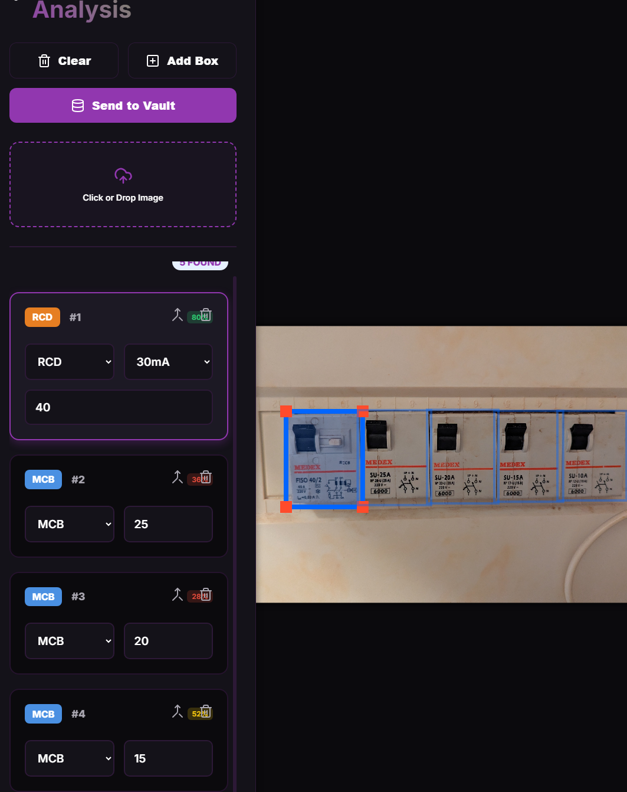
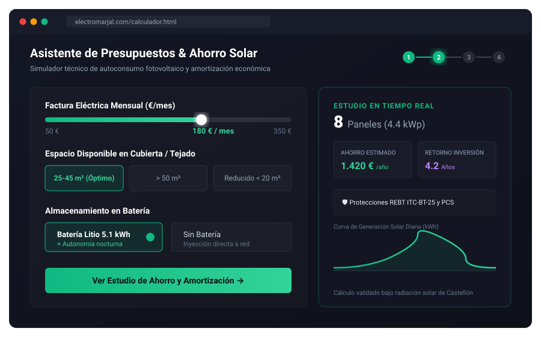

Bridging Physical Systems & Artificial Intelligence
Technical Founder and Certified Electrician deploying custom Computer Vision models, solar-calculators, and automated industrial audits to solve high-value physical bottlenecks.
Spotlight Builds

PanelSafe: Automated Breaker Auditing
A custom YOLO-based detection pipeline that automates electrical breaker-board audits, trained on a bespoke synthetic data generator built to bypass the manual annotation bottleneck. Raw detections are refined by a spatial heuristic layer and an HMM/Viterbi decoder that applies the physical grammar of a DIN rail. Built with an ablation harness — which is how the intuitive slicing-based optimisation was measured, shown to reduce accuracy, and removed.

electromarjal.com: High-End Solar Estimator
The commercial solar and electrical installations platform for Marjal Instalaciones Eléctricas SL. Features an interactive, client-side solar calculator wizard, multilingual routing (ES/EN/FR) for expat conversion, and structured local SEO.

PanelSafe Unifilar: Detection Output → Compliant Schematic
Converts raw YOLO detections into a hierarchical electrical single-line diagram rendered with the UNE-EN 60617 symbol library. Fully client-side editing with live re-render, and vector PDF / PNG export for regulatory submission.
Professional Trajectory
I operate at the intersection of complex physical infrastructure and modern software intelligence. As a Certified Electrician under Spanish REBT regulations and an autonomous Technical Founder, I build software not in a vacuum, but to streamline and automate real-world industrial systems.
My transition into Data Science, Computer Vision, and MLOps was born out of a desire to solve high-value bottlenecks in the electrical industry. By translating physical field experience into robust datasets and scalable containerized inference services, I build production-ready software solutions.
I focus on designing custom data pipeline engineering, object detection, synthetic data generation, and home-lab GPU orchestration (Proxmox/Kubernetes) to ensure that machine learning models perform reliably in real-world environments.
Developer Metadata
Systems Storytelling
Technical Communication & Content Creation
Building high-performing systems is only half the battle; explaining them is the other. My background as an ESL Teacher trained me to translate complex, technical rules into structured, easy-to-understand explanations for diverse audiences.
This skill extends into environmental systems building. On my YouTube channel, Marxa Garden, I documented the conversion of dry family land in Spain into a self-sustaining Mediterranean garden using permaculture and water-conservation principles. This required deep planning, public speaking, and technical storytelling to explain agricultural systems to a global audience.
Get in Touch
Looking for a Machine Learning Engineer, Computer Vision Developer, or Technical Partner to build robust data pipelines and systems?
Available for Local & Remote Opportunities
Operating out of Spain with ready-to-go W2/1099 compliance for US companies, or local/remote EU contracts.